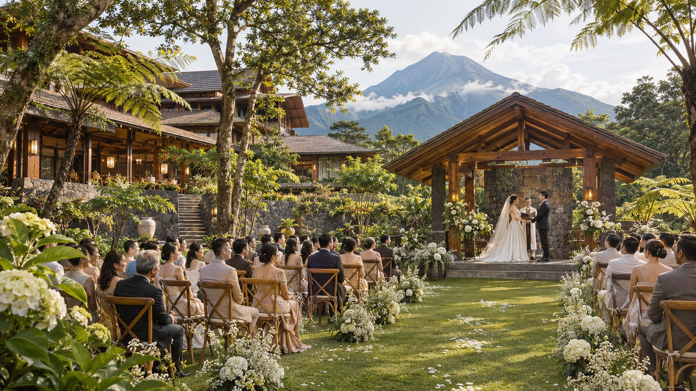
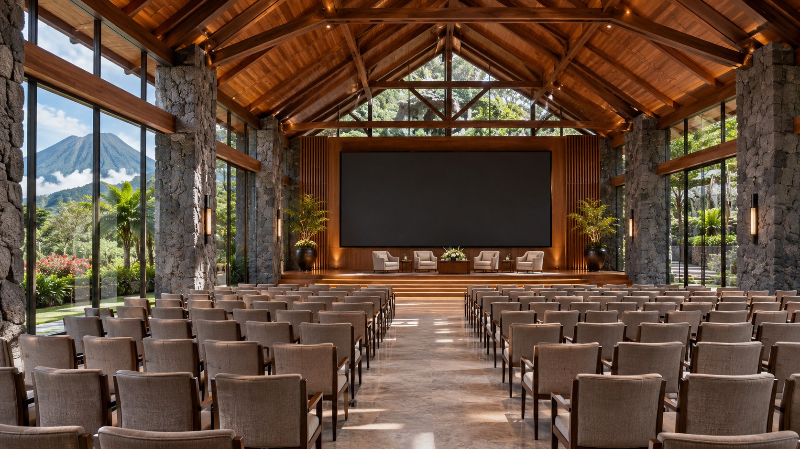
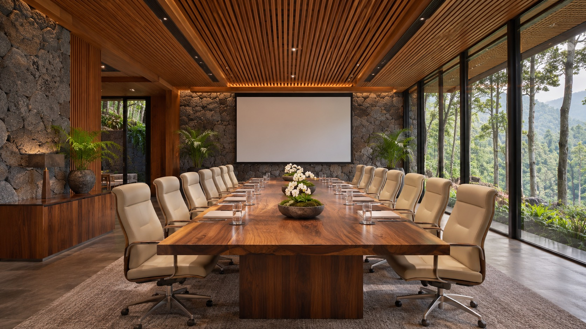
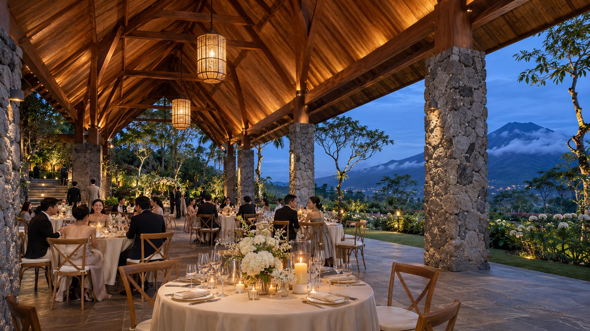

Extraordinary occasions
Some moments
deserve a mountain.
A destination envisioned for meaningful work and exceptional celebrations.
The Mount Paradise vision
Extraordinary occasions
Mount Paradise is being designed around the whole occasion. A conference hall, smaller meeting rooms, garden ceremony settings and sheltered dining terraces make room for leadership retreats, private weddings and celebrations that unfold over more than a single day. These are illustrative settings for the future destination.

Conferences & corporate retreats
A room for
big ideas.
A dedicated conference hall combines the practical needs of a working gathering with the warmth of the Main Lodge. Flexible seating, presentation facilities and garden-facing breakout areas are part of the design ambition.

Leadership & private meetings
Focused conversation.
A wider perspective.
A more intimate meeting room offers space for strategy sessions, board discussions and leadership offsites. Beyond the table, gardens and shared meals create room for the conversation to continue.

Private weddings
An evening
worth remembering.
The wedding vision moves naturally from garden vows to candlelit dinner beneath timber roofs. Sheltered spaces, beautiful planting and warm lighting create a celebration with a strong sense of place.

The whole occasion
More than
the main event.
A welcome meal, a terrace conversation, a morning walk. Future accommodation and dining are planned alongside event spaces, so families and teams can spend meaningful time together.